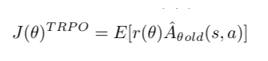
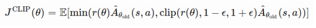
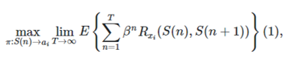
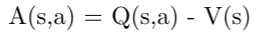

The "Amazon Deep Racer" is a contest that Amazon has been hosting for the last couple years. It involves controlling a Amazon designed race car called "AWS Deep Racer".
It is a 1/18th autonomous race car designed to test Reinforcement Learning algorithms on a physical track. However, the physical deep racer is not very accessible.
It requires physical space to run the algorithms and a relatively large initial investment to start trying different types of models. It is also less time efficient since the user must manually reset the racer when it goes off track. This would discourage many developers. Luckily Amazon did not just make the physical racer. It also created a viable simulation environment which can be used to train various models and even evaluate them. This is necessary to train Reinforcement
Learning algorithms since when the agents are first learning the are prone to going off track due to their nature.
Without a simulation environment it would be very tedious to train different models. There are other advantages to using the simulation environment such as the cost mitigations as well as the physical space aspect of it. The model can train when you are anywhere. After a model is trained the model is automatically uploaded to amazon's open division for racers. A place where developers can compete against eachother. Every month the top 10% of racers are moved up to their pro division.
This includes a pro division starter kit which has many things such as; merch, stickers and a pro racing division certificate. The top 10% overall every month also win a physical Deep Racer delivered to them via Amazon Prime.
Introduction
The goal of my project was to make a "Amazon Deep Racer" model go around a track in the least amount of time. I will choose the track named "2022 re:Invent Championship" this is the track that will be used for the championship in 2022.
The track involves many straights, a series of small sharp corners as well as long hairpin turns. The Deep Racer uses Reinforcement Learning which is a version of Machine Learning. Reinforcement Learning is not a new concept it was been around since the 1950's. There have been many improvements on Reinforcement Learning in recent years; for example, the two algorithms available to be easily used in the Deep Racer are PPO(Proximal Optimization) and SAC(Soft Actor Critic) where created in 2017 and 2018 respectively.
Reinforcement Learning is a specific type of machine learning where an agent has direct access to the environment and influences it directly. The robot attempts its best to find the path most optimal. The way we describe the optimal path is by making a reward function. The reward function should take into account multiple environment states. For example, in the context of racing a simple possible reward function is:
if distance_from_center > 0.5:
reward = -1
This take the state of the environment based off the distance from center. If you are more than 0.5 meters away from it penalizes the robot discreetly with a value of -1. This would tell the robot that its current state is not very rewarding and it will attempt to look for the state which would give it the highest reward.
History of Reinforcement Learning
Let's start with a broader category of machine learning. Machine learning is the unfinished masterpiece of the work of many scientists. The scientist that has taken most of the credit is Arthur Samuel. He coined the term Machine Learning in 1952 even though machine learning was worked on before 1952 it was just not called machine learning. Machine learning became a common addition to most people's vocabulary in the 1990's when IBM's supercomputer beat the world's best chess player.
That computer was still based off the algorithms of Arthur Samuel. Bellman was concerned with the need for optimal control which lead his to derive his equation called the "Bellman Equation".
This equations helps maps long term reward; to the reward from the current action combined with the expected value for future rewards. One algorithm for solving this was called dynamic programming. When solving these equations becomes discrete and stochastic, they became known as Markovian decision processes(MDP's). Dynamic programing became one of the most common methods of solving general stochastic optimal control problems in a feasible manner. The Law of Effect coined by Thorndike is what led to the idea of a model that searches its environment using a method of trial and error.
The simplest implementation of reinforcement learning was a robot designed to win tic-tac-toe matches. It was given rewards for winning and punishments for losing. This describes "learning with a critic"(Widrow and Hoff 1960) rather than a teacher. Harry Klopf was the individual that took the most credit for trial and error learning as he noticed that researchers were mostly devating their time on supervised learning rather than reinforcement learning. He wanted to be able to use control to achieve a desired environment rather than a undesired environment.
Procedure
To accomplish my goal I started with first observing what parameters I can control.
"all_wheels_on_track": Boolean, # flag to indicate if the agent is on the track.
"x": float, # agent's x-coordinate in meters.
"y": float, # agent's y-coordinate in meters.
"closest_objects": [int, int], # zero-based indices of the two closest objects to the agent's current position of (x, y).
"closest_waypoints": [int, int], # indices of the two nearest waypoints.
"distance_from_center": float, # distance in meters from the track center.
"is_crashed": Boolean, # Boolean flag to indicate whether the agent has crashed.
"is_left_of_center": Boolean, # Flag to indicate if the agent is on the left side to the track center or not.
"is_offtrack": Boolean, # Boolean flag to indicate whether the agent has gone off track.
"is_reversed": Boolean, # flag to indicate if the agent is driving clockwise (True) or counter clockwise (False).
"heading": float, # agent's yaw in degrees.
"objects_distance": [float, ], # list of the objects' distances in meters between 0 and track_length in relation to the starting line.
"objects_heading": [float, ], # list of the objects' headings in degrees between -180 and 180.
"objects_left_of_center": [Boolean, ], # list of Boolean flags indicating whether elements' objects are left of the center (True) or not (False).
"objects_location": [(float, float),], # list of object locations [(x,y), ...].
"objects_speed": [float, ], # list of the objects' speeds in meters per second.
"progress": float, # percentage of track completed.
"speed": float, # agent's speed in meters per second (m/s).
"steering_angle": float, # agent's steering angle in degrees.
"steps": int, # number steps completed.
"track_length": float, # track length in meters.
"track_width": float, # width of the track.
"waypoints": [(float, float), ] # list of (x,y) as milestones along the track center.
With all these options I realized that there are nearly an astounding number of parameters I can control. I then went to look what was commonly done. I found codes that helped maintain heading, help stay on center of the track and reward based on if all the wheels were on track. Seeing this I decided to do something similar and combined a bunch of the reward functions that I saw and left all the hyperparameters to their default settings. To my surprise the combinations of the reward functions I tried did not converge rapidly enough and the training eventually "failed" even if I increased the significantly. I initially kept the speed low to give the robot a smaller action space. To help it learn and converge faster. To counteract this, I read more about reinforcement learning theory and started learning about the policy and the advantages to the algorithm and hyperparameters I was using. With this knowledge I started including gradient results as well as more parameters to be under control to better observe the environment I am in; I also used a combination of multiple parameters to reward function. Example:
This an example of rewarding an agent using discrete rewards. This new approach converged fast enough for training not to fail and it preformed well. It managed to complete the track most of the time without ever completely exiting track.
During evaluation my best model which came after trial and error with different reward functions obtained an evaluation lap time of approximately 1 minute. I knew I could improve this. I tried adding more different parameters which ended up hindering the robot as I was controlling it too much. Later I thought of using continuous functions as rewards functions as opposed to discrete rewards. To encourage convergence on a maxima. If the robot could see that if it goes slightly in this direction and the reward increased it would want to continue pursing that direction. I used function in my best attempt to omit the possibility of the robot converging on a local maxima rather than a global maxima. When I first started using this technique the performance of the robot improved drastically. It cut the time down by nearly 20 seconds. I still figured that a lap time of 40 seconds seemed too long. Then I started composing multiple functions together and seeing how they would react together. This created functions with 8 independent variables. Which is nearly impossible to see how they interact together.
I ran the model and it improved performance by another 20 seconds. My worry was that I was converging on a local maxima rather than a global one. To combat this, I increased the which rewards more exploration than convergence which did not improve performance significantly what it did could just be attributed to giving the model extra training time. After seeing this result, I realized that the composition of functions must create a function. Therefore, my worry of converging on a local maxima was not necessary.
I learnt that a really low entropy is beneficial since there is not much noise envolved in this simulation.
It is also beneficial to have a high since it looks for states that will lead to states with higher reward further down the line. The loss type that preformed the best for me is .
I had a of 0.00003 which worked well for this agent, when compared to the other values I used. I tried the maximum value for the but the agent would never converge on a solution, since it would do large incorrect policy updates. I also used smaller steps but the step size of 0.00003 seemed optimal. Theoretically smaller step sizes preform better but it would take longer to converge. Due to budget and time restraints I decided the difference in preformance was negligible.
I found that 35 was the optimal value for the "Number of experience episodes between each -updating iteration" hyperparameter after some trial and error and 10 is also optimal.
The PPO Algorithm
As afore mentioned, the PPO algorithm stands for Proximal Policy Optimization. It is a relatively new algorithm it is used in many state of the art applications. It is one of the easier ones to use and offers a high level of performance. To compare the ease of use of a PPO algorithm we can compare it to the algorithm. requires coding for their and corrections for their updates. PPO makes hyperparameter tuning very easy and usually does not require much and uses small steps determined by a variation to update its . The limiting of the step size is called the trust region. It is a method that PPO algorithms use to prevent massive jumps in learning or action states. You rather the agent take smaller steps than too large ones and end up in a completely different state with only one action that got it there. The also popular used Kullback-Leibler divergence; in oreder to determine if the update was an outlier. It is verifying that the update is within the "trust" region of the old . The is explained below. To show why this algorithm was not used here is a quick overview of :
is denotated by: D_kl (P||Q)
These 2 equations express how to evaluate for :
The integral is used in the continuous case and the summation in the discrete case. These two equations will return a value between 0 and positive infinity. 0 being a perfect match meaning there is no deviation between the 2 samples or in this specific case policies. The idea behind this formula is that the log function will return a value between 0 and infinity but we multiply by the probability density function so we can weight areas of higher probability more than areas of lower probability. This means that this equations values matching areas of higher probability than areas of lower probabilities. The PPO is an algorithm based on probabilities. That is why we are dividing and multiplying probabilities. The agent is only aware of the best state it has experienced. So if it learned a "good" route as a programmer we do not want it to exploit that route. If it were to do this it would never see the possible better routes as it would just be on the high reward path. This good path may not be the optimal path. That's why we weight those "good" routes with higher probabilities but not a 100% so the agent can still explore more of its environment in hopes of finding a more efficient route or literally a route with a greater number of rewards. The way the probabilities are weighted is with a hyperparameter called entropy. This hyperparameter controls the exploration vs exploitation balance of an agent. In amazons servers they "limited" the entropy value to any real number between (0-1) where 0 is just exploitation it will use best route found and never explore. A value of 1 returns a behaviour that is unpredictable and leads to a robot that may never converge since it has to explore a continuous action space and is not capable of visiting every state. This can combatted with changing the action space to discrete but doing this you are already limiting the agent to predefined actions. The point of programming an agent is so the agent is able to discover the optimal path.
even though the programer may not have thought of it. If you change to only predefined actions it will never find a path other than what the programmer knows. As it will only find the optimal path you have defined. It will never find anything better than what the programmer has thought of.
An important piece of information is that KL divergence is not symmetrical.
Meaning that :
D_kl (P||Q) != D_kl (Q||P)
Most algorithms do not rely on this unbounded and unsymmetric comparison method. Since it is hard to interpret what it means to have a that is infinitely different than another . It does not have much quantitative interpretation. For that reason, we use a symmetrical and a function that returns a value between 0 and 1 that is based on . It is called Jensen-Shannon divergence.
The formula is:
JS(P || Q) = 1/2 * KL(P || M) + 1/2 * KL(Q || M)
Where M is calculated as:
M = 1/2 * (P + Q)
This function is only valid when the KL is calculated using Log base 2.
The PPO algorithm approaches this problem a different way it still updates the explicitly. It uses explicit limits that are defined discreetly(ε). The epsilon is a hyperparameter that the programmer can choose the value of.
The PPO algorithm uses the epsilon value and a ratio to calculate similarity between the old and the new as opposed to a function calculating similarity. This algorithm does it by a "simple" ratio. The new divided by the old , and we call it r( θ).

What this function does is take the expected value of r(θ) time the old 's previous state and action.
This function weights r(θ) against the old .

This equations take the expected value between two calculations and choses the minimum one to avoid taking to large of a "step". It will either take the value of the function calculated before J(θ) or the same one but with the values clipped between 1-ε and 1 + ε. Therefore, this new function returns a value between 1-ε and 1+ε and epsilon is the user controlled hyperparameter. So the is allowed to update by at most ε from the old . Allowing users to influence training rather than leaving it up to the algorithm.
Explaining the Hyperparameters
As mentioned before the PPO algorithm has hyper parameters which can be used to optimize the learning of the agent. I will first start out by listing the hyperparameters: Gradient batch size, number of epochs, learning rate, entropy, discount factor, loss type and number of episode before each updating iteration. Starting from the beginning of the list the gradient batch size, this is how many experiences are used to update the gradient descent usually in the continuous action space case you want a gradient in the thousands. In the discrete case you would want a value somewhere between 5-20 usually. The number of epochs defines the amount of times we will pass through the batch size before updating the the technique for this is to go larger and larger in order too minimize the validation accuracy. The learning rate is pretty much self-explanatory, it is the rate at which the robot will update in other words the step size. If it is too small the agent will never converge in a realistic amount of time. Too large and it will not be accurate since the noise from the environment will have added up too much and make it an inaccurate update. As for entropy,
this hyperparameter would be extremely difficult to find an optimal value for in a stochastic environment. This hyper parameter controls the exploration vs exploitation of an agent. This hyperparameter is valued between 0-1. A value of 1 would mean this agent will purely explore and never stick to an optimal path always in search of a better one. A value of 0 would mean that the agent will find one path and stick to it. It could be the slowest path around the track that involves going off track but it will stick to this path as it is the only path it knows. In a optimal environment like the one in the simulation it was much easier to find a optimal value since my values aren't interfered by noise very much I am able to set a entropy value comparably close to 0. Since I want minimal exploration one it finds a suitable path. Coupled with continuous reward functions the idea is that it will reach the global maximum. The discount factor is how far the agent will look into the future to take into account the rewards from those actions states. The value ranges from (0-1). 1 is as far into the future as possible and 0 is immediately right now. The value cannot be 1 or 0 since the Markov decision
process sum will not converge or trivially converge to 0. Here is the equation that demonstrates that it will not converge.

This is an infinite sum. Using calculus 2 techniques we can see that this sum will usefully converge if 0< beta < 1 . Where Beta represents the discount factor. Then there are loss types instead of explaining how they work since they are very common in multiple areas of math and computer science I will explain when to use which. In Amazon deep racer the programmer is presented with 2 options loss and mean squared loss. The default should be to use mean squared loss since it allows for faster training. The problem of not converging could arise in which case the programmer should implement loss.
As for the number of episodes before each updating iteration, number of tasks your model will go through during training. Where tasks are defined as the cycle of the agent entering a state it doing an action it achieving a new state with is accompanying reward. This hyper parameter determines the number of cycles it will go through before updating
its current .
Why Use the PPO Algorithm
There are many advantages that the PPO algorithm has over other comparable algorithms as well as draw backs. The PPO algorithm is designed to update the explicitly, based on the vanilla policy gradient. This is not as straightforward as if the gradient gives a large positive value that it means the "agent"(the machinery the algorithm is controlling) is improving because the environment can be noisy.
The algorithm does this by comparing the gradient of the new to the old by a simple subtraction. Denotated as:

Where:
A = Advantage Function.
Q = The current state.
V = An neural net estimate of the last .
If the action function is positive in theory this means the agent improved and the new is better than the previous therefore the agent will update and raise the probabilities of the agent taking these actions in the future. If negative the agent will decrease the probabilities of those actions as they were harmful to the performance. The noise produced by V and Q since they are both estimates carries over to the action function so the action function could end up with an inaccurate estimate and negatively weight desired actions. There are multiple ways to combat this; you can make your agent take smaller steps or update over longer periods of time so the noise will lower over the whole data. Both these techniques come with a common drawback which is the time to converge to a solution. Too small of a learning rate or too large of a sample size will make the robot more accurate but, in most cases, you will not see an improvement since it will take for ever to learn. The term smaller steps means that the will only consider new policies at a fraction of the default. So, if the action function says that the last action is desirable the agent will weight the probabilities less then it would've normally. This helps combat noise by lowering the effect a small outlying sample will have on the agent and it will be easier to correct over the next few updates.
This is particularly useful in stochastic environments. The PPO algorithm also uses less computing power then its competitors such as TRPO, when comparing its current to its old it should be calculating second derivatives and their inverses. Some policies either approximate some functions which would lower the complexity. What the PPO algorithm does is that it takes the first derivative resembling a gradient but makes it closer to the second order derivative by adding soft constraints. This leaves some error but we say it is acceptable. When choosing algorithms I only had a few choices either PPO or SAC. The SAC algorithm is a algorithm. It learns what it thinks is the optimal path called a greedy . It estimates reward based off that greedy even though the agent itself is not following a greedy policy. The agent is still expected to explore, and the SAC algorithm will update the greedy function if the agent finds a trajectory with higher reward but will still not neccesarily follow that path. The SAC algorithm will not use that information to go closer to a zone of higher reward. It will not recognize a trend. Example: the closer I get to the center line the better my reward. It would not be able to infer that much. It will realize that the reward obtained there is higher and move on. The advantage of the SAC algorithm is that it does not need to interact with the environment to learn. It can learn from data rather than having to experience and make the data itself. I thought the PPO algorithm would be more beneficial since it is a on-policy type of algorithm. It is uses 2 neural nets to approximate the values of the policies and updates them continuously. My initial tries were with PPO and then I tried the SAC algorithm but it yielded worse results and had more hyperparameters, so I decided to stay with PPO since it seemed more user friendly and yielded better results. Many people online also came to the conclusion that the PPO algorithm is one of the best if not the best algorithm for RL(Reinforcement Learning). It takes less time to train and yields more stable results. The downside is that this method has to learn on-policy which is not necessarily bad, unless accessing the environment becomes a problem. when accessing the environment is expensive such as; data from people, making stock market trades, etc. In these cases it would make more sense to use a algorithm that learns that can be given data and find optimal patterns that way. SAC is a algorithm that can accomplish this. I would not recommend using the SAC as it becomes confusing using the "temperature" setting to control entropy. The performance of the agent relies heavily on this parameter, any slight adjustment will cause it to deviate largely. When adjusting the temperature the programmer would also need to adjust the rewards and rescale them accordingly. The reward gets rescaled in accordance with the temperature making large rewards overwhelming compared to small rewards. Losing the negative impacts the programmer intended for the agent. There are alternatives to the SAC algorithm which are better preferably I would use TD3 but, any off- policy algorithm can learn with less steps that a on-policy.
Results
For this project there were many variations and differences in the results.
To make the results all similar I used all the same racetrack so it would be easier to compare lap times.
The main improvement was the decrease in the Time as can be seen in the 2 tables. My best lap times took 1/5 of the time compared to lap times when I was starting. The results are very different. At the beginning I was not hyper parameters tuning or using continuous rewards. Which led to inconsistent learning and models that were not efficient.
In the end I used continuous rewards and tuned the hyper parameters, and I was eventually ranked 67th in the open division out of approximately 2000 people.
In the end my rewards were all codependent. The last reward was a function of all the other ones leading to a 8th dimensional hyper-plane. Some of the functions I used are given below with their corresponding domains:
Future Improvements
This environment that the training was done on is designed to be ideal. No tire wear, no slippery spots and friction constant. Which would lead to the environment not being very stochastic. The agent knows what to expect and what will happen almost every time. The environment would be said to have stable dynamics. As Phil winder said in his book "Reinforcement Learning Industrial Applications of Intelligent Agents" he said the logical step is to prefer deterministic models where the dynamics are stable. In this case the dynamics are stable, but a future step would be to upload my trained agent to a physical model leading to a "change" of environment. I could step up the same track with the same boundaries as the simulation. Now, we have different variables to consider that are not predictable. Turning the environment that is now carries the properties of being unstable. Once again Phil Winder said it is advantageous to prefer a trust region method. Since going off track is the absolute last thing you would want this agent to do. The trust region method is a method that weights the discoveries of the new agent. If the agent discovers something beneficial in the trusted region it will provide a decent update to the . If it is outside the trusted region, it will provide only a small update in order to preserve the programmers intent. Some tips I used when training where: that smaller step sizes require larger training time, have multiple episodes per update to attempt to break sample correlation. Which is a property relying on the central limit theorem. One case may be exceptional, but the average will be average. More sample points lessens the chance of falling into the exceptional category. After trying to make the robot learn faster to save time and see performance impacted based changes on my reward function or changes in the hyper parameters. I tried to make the agent update quicker.
To my surprise the learning was worse and seemed to oscillate and slowly learn but mostly oscillate. Finally if you want more stable learning LEARN SLOWER.
With more time and more will power this project could be simulated in a Linux environment where all the training would essentially be free, this would allow me to train more without cost restraints that amazon imposes for use of its servers. This would allow for agents with slower convergence rates to be able to converge without forcing them to converge faster due to cost requirements. Other improvements that could be done with the simulation running locally would be that it would be feasible to run a version of a Monte Carlo to search for the best hyperparameters for a given reward function and scenario. There are also python packages which would do this hyperparameter search for you. This would improve the performance of the agent. This is most likely the difference between top teams and teams attempting to compete. With more available training time it would be useful to expose the agent to multiple different tracks and scenarios so it will not overfit to a track.
My agents did not overfit to a track as they could still complete any track they were given, however they seemed to preform better on the track where they were initially trained on.
Conclusion
The goal of this project was to explore and understand reinforcement learning. This was accomplished, I learned different types of reinforcement algorithms and how they work. I learnt how probabilities are at the core of all these different types of algorithms. How that these algorithms would not work if there would not probabilities in action under the decisions these agents are making. They would just be agents doing one thing and never learning. I also learnt about tests for divergence and how crucial they are to the agent learning at a predictable rate. I learnt about mdp's(Markov decision process) and how they are what the algorithm must solve in order to map state(s) with action(a) brings the agent to state(s'). The state (s') returns a reward based on the pair of the previous (s) and (a). Using this information it makes a typically denoted by π. This shows the optimal . I also learnt how hyperparameters affect the probabilities and how likely the agent is to converge. I first thought that they must not have that large of a affect on the outcome but after doing my limited hyperparameter search it turns out that there is a large difference between all the different settings. This also showed me how previous math concepts I learnt in other courses can be useful for other projects in my reward function I was taking derivatives as well as using gradient vectors. I also learnt the amount of small adjustments it takes to make a model that can run this somewhat difficult track. I may not have been competing at the same level that the pro teams are with teams
of people designing the reward functions and adjusting the hyper parameters but being ranked 67th in the open division is not a bad start to my adventure with reinforcement learning.
and are monotonically non decreasing.
By def: x,y ∈ ℝ with x <= y which implies f(x) <= f(y)
which once again implies g(f(x)) <= g(f(x))
(g∘f)(x) <= (g∘f)(y)
∎
Glossary
Policy: is a mapping from the current
environment observation to a probability distribution. The goal of the agent is to tune the parameters in the policy to obtain a maximum reward.
ACER : Actor Critic with Experience Replay. It is a learning algorithm.
Off-policy: This is a method that uses a different policy for optimization then the one that is being used to take actions in.
This means there are 2 policies running in parrallel one that is used for exploration and the other which stores optimal paths.
Advantages: a) Can learn from demonstation.
b) This agent can continously explore.
Disadvatages:
a) The behaviour policy could be dangerous since it constantly explores new environments. In some enviroments this could be costly and dangerous.
Replay Buffer: Stores past trajectories and are later used in training.
TRPO: Trust Region Policy Optimization is a method of constraining the policy updates using
Huber loss: This is a form of robust regression that is not as sensitive to outlying data.
Can be used to balance between the Mean Absolute Error, or MAE, and the Mean Squared Error, MSE. These methods are either to sensitive to outliers or not enough. To combat this huber loss uses
a tuneable parameters "ɑ". For errors smaller that alpha
the resulting data resembles a Gaussian distribution. Outside this region is looks more like a Laplace tailed distribution.
In order to understand Huber loss you need to know what linear regression assumes it assumes a constant variance and a mean of 0 with a gaussian fit. The huber loss replaces the gaussian distribution
for a thicker tailed distribution ususally the Laplace distribution or others from the exponential family.
Monotonic function: A function that is always increasing or decreasing on its domain. Its derivative never changes sign.
KL divergence: it is a method of measuring the difference between the 2 policy updates using the hyperparameter ε
Entropy: this is a tuneable hyperparameter it controls how much the agent will explore vs how much it will exploit the good paths already found.
Learning rate: This is the hyperparameter commonly denoted as ε this adjusts how much the agent can change the policy every time in does an update.
Discount factor: This is another tuneable hyperparamter it controls how far the agent looks into the future for possible rewards.
Epoch: it is the number of times the agent will go through the data. For complex tasks you will want a higher number of epochs but it comes hand in hand with longer training times.